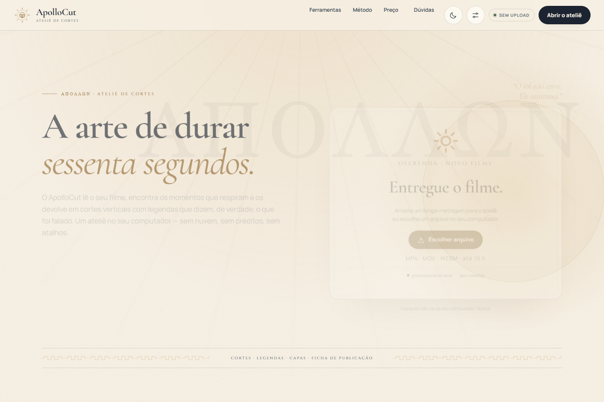
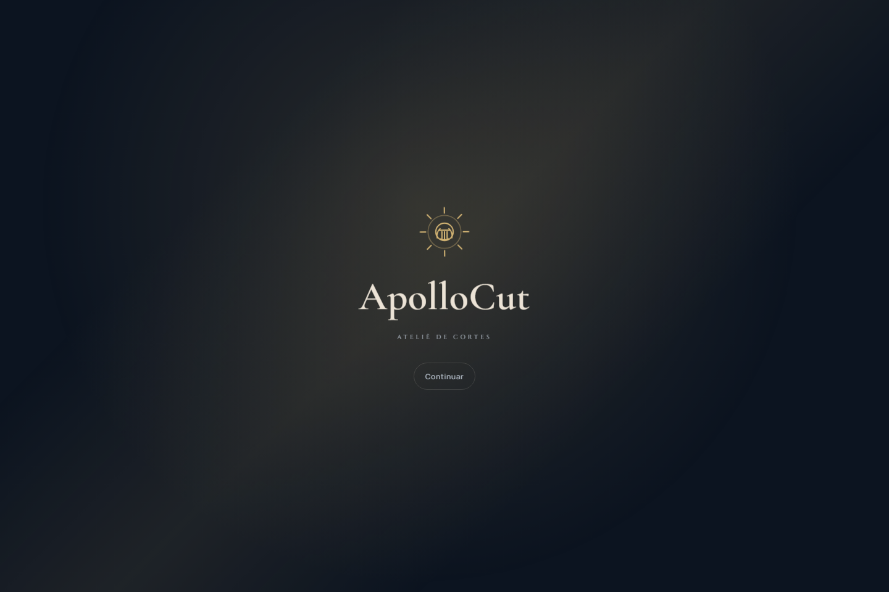
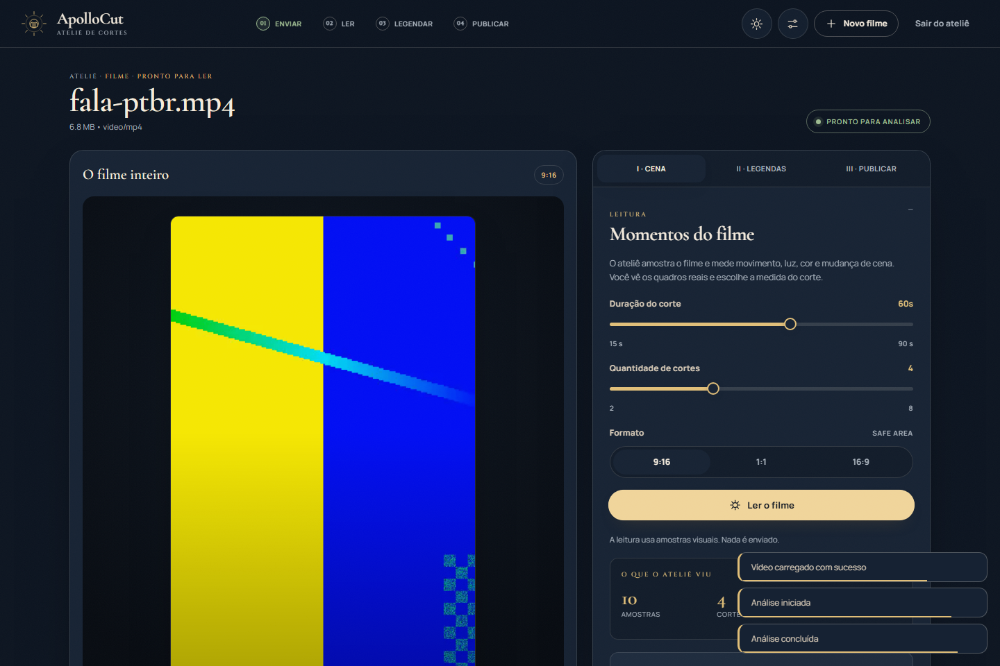
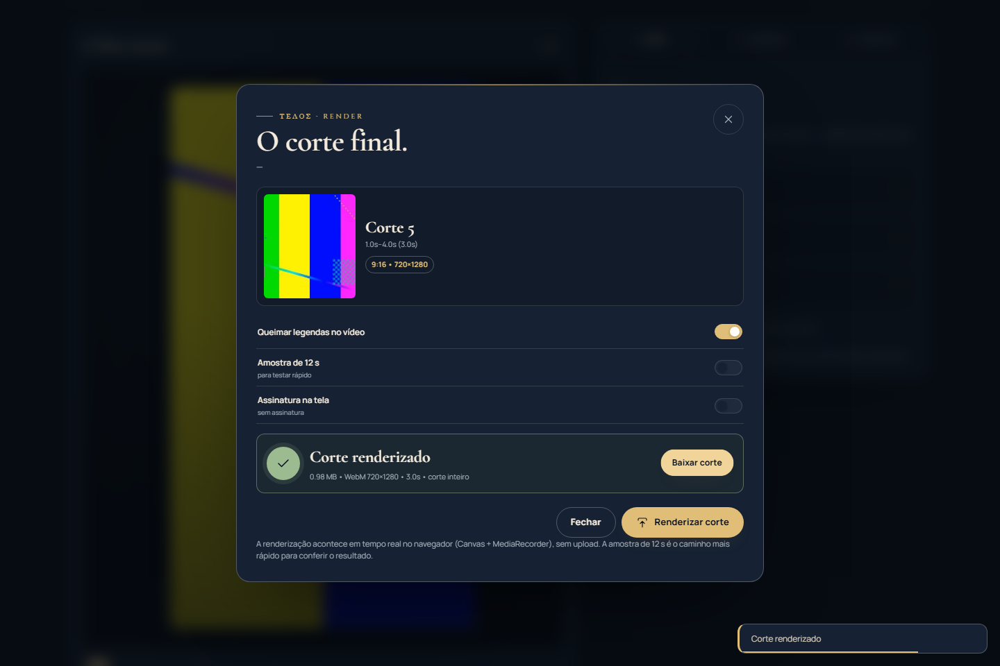
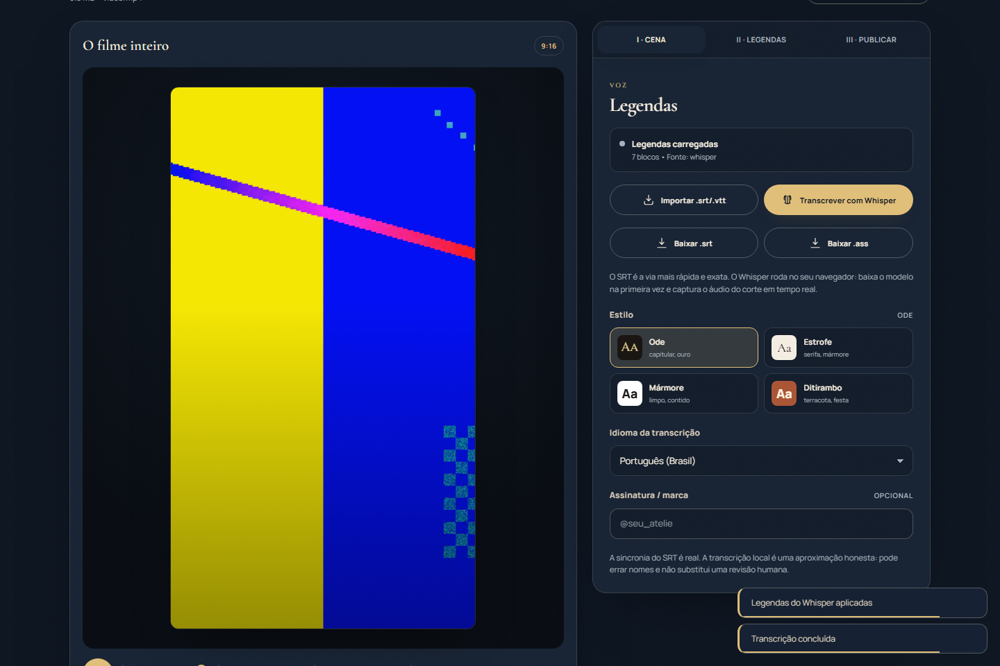
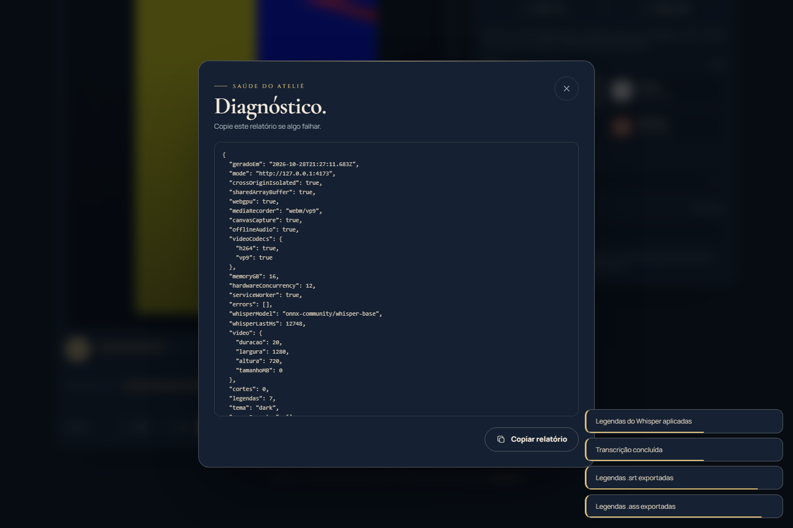

Relatório de funcionamento
Branch fix/quatro-bugs-criticos, baseline na tag checkpoint-antes-dos-bugs. Evidência coletada com Chromium real via Playwright em http://127.0.0.1:4173.
14/14 verificações aprovadas
Os quatro defeitos
1 · TemaBotões Dia/Noite/Automático e o alternador do cabeçalho não tinham handler. Agora aplicam, persistem e anunciam o estado.
2 · ProcessamentoBotões presos em
disabled, CSP bloqueando blob: e file:// matando módulos. Agora o vídeo carrega, a análise chega a 100% e gera cortes.3 · Edição e exportaçãoO export era
setTimeout com "Download (simulado)". Agora há corte, divisão, undo/redo e WebM real via canvas + MediaRecorder.4 · Transcrição
@huggingface/transformers não resolvia no navegador. Agora o Whisper roda local em Web Worker, com áudio mono 16 kHz e legendas sincronizadas.Verificações obrigatórias
| Verificação | Resultado | Detalhe |
|---|---|---|
| 1. Servidor com COOP/COEP e crossOriginIsolated | APROVADO | coi=true · sab=function · coop=same-origin |
| 2. Tema alterna e persiste após recarregar | APROVADO | light → dark → dark |
| 3. Vídeo carrega, análise chega a 100% e gera cortes | APROVADO | 4 cortes, 4 miniaturas reais |
| 4. Corte 1s–4s exporta WebM válido (9:16, ~3s) | APROVADO | 720×1280 · vp9 · 90 quadros · 3s |
| 5. Whisper transcreve a fala e os tempos são válidos | APROVADO | 7 blocos · 3/5 palavras-chave · whisper-base |
| 6. Legendas exportam em SRT e ASS válidos | APROVADO | srt 369 B · ass 1034 B |
| 7. Painel de diagnóstico abre e mostra o ambiente | APROVADO | crossOriginIsolated, codecs, memória, erros |
Cenários de borda
| Cenário | Resultado | Detalhe |
|---|---|---|
| B1. Vídeo sem áudio | APROVADO | “Este vídeo não tem áudio decodificável…” |
| B2. Arquivo corrompido | APROVADO | recusado com toast, sem travar |
| B3. Cancelar no meio da análise | APROVADO | destrava e permite reanalisar (4 cortes) |
| B4. Trocar o tema durante o processamento | APROVADO | dark → light, análise conclui |
| B5. Recarregar no meio de uma operação | APROVADO | app volta são |
| B6. Vídeo de 5 minutos | APROVADO | 300 s carregados e analisados |
| S. Erros de página durante a suíte | APROVADO | nenhum |
Capturas

crossOriginIsolated = true.




Ctrl+Shift+D).Arquivos gerados
evidencias/corte-exportado.webm— corte real de 3 s, VP9 720×1280, áudio Opus.evidencias/legendas.srteevidencias/legendas.ass— legendas exportadas pelo app.evidencias/transcricao.json— cues com tempos e modelo usado.evidencias/diagnostico.json— relatório do ambiente copiado do painel.evidencias/e2e-run.logeevidencias/resultado.json— saída bruta da suíte.
Limitações assumidas
Tempos por palavra são aproximados: o modelo q8 não traz atenções cruzadas, então o app usa tempos de bloco e distribui as palavras por peso. A transcrição roda em wasm/q8 (não WebGPU). A exportação gera WebM — o MediaRecorder do Chromium não grava H.264/MP4.